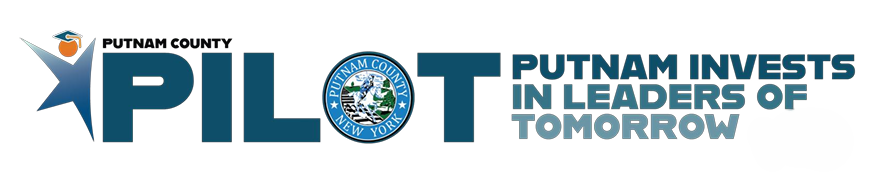
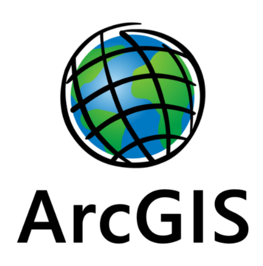
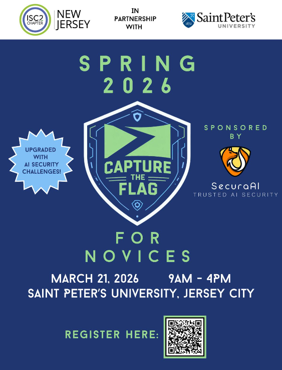
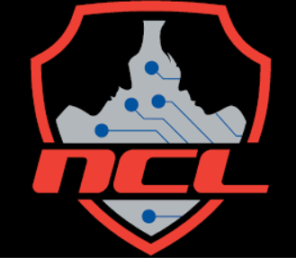
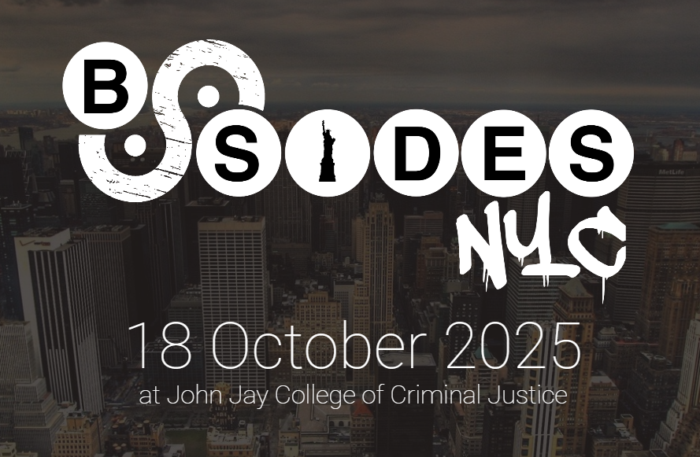
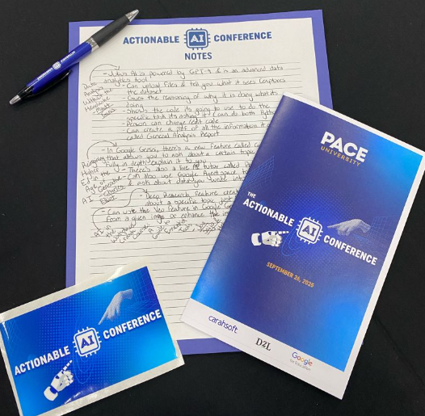
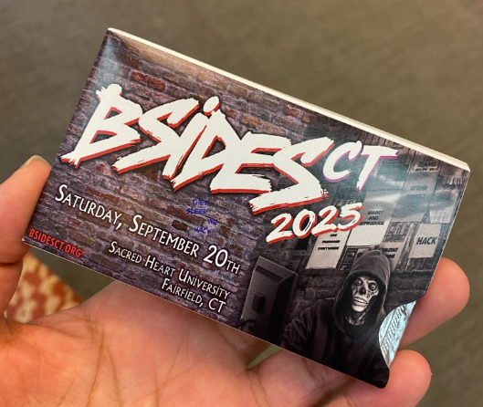

Internships


#1: Updating COOP Plan
#2: Interacting with UTMStack Server to be able to look at log data based off of their internal computer network
#3: Creating IT Status Page from scratch using HTML, CSS, and Python
Approved my understanding of the differences between entrepreneurship vs intrapreneurship and how to compile information through communication and the development of marketing tools to promote a specific model or product
Moderated a collection of posts, emails, and pictures for evidence of advising teachers and inviting students from my high school to participate in Inspirit AI’s (Artificial Intelligence) Scholars program that I got the chance to participate in during the summer of my high school freshman year
Implemented skills such as content and email marketing using Gmail & Canva to better encourage students to sign up for this prestigious opportunity in order to work with mentors from elite institutions such as Stanford, Harvard, MIT, and etc
Competitions

Had the opportunity to represent Pace University - Seidenberg School of Computer Science and Information Systems while participating in the ISC2 New Jersey Chapter Capture the Flag for Novices 2026 hosted at Saint Peter's University on March 21st, 2026, from 9:00 AM – 4:00 PM. This hands-on cybersecurity competition challenged participants to think critically, collaborate effectively, and apply technical concepts across a wide range of scenarios. Through the event, I earned 1010 points, helping my team place 10th overall. A huge part of this success came from strong teamwork. I want to give a special shout-out to my teammates — Adiel Vanegas-Robles, Tyler Coleman, and Jolber Rodriguez — who I had the pleasure of working with throughout the competition. Our collaboration, communication, and willingness to support one another made a meaningful impact and strengthened our performance across the challenges. The experience also provided valuable learning opportunities through the guidance and support of the event hosts and volunteers, reinforcing both technical skills and real-world problem-solving strategies. Overall, this competition further solidified my interest in cybersecurity and my appreciation for collaborative, hands-on learning.

Developed hands-on practice of various cybersecurity topics through completing Capture the Flag (CTF) challenges in a matter of 3 days per game
Approved my understanding of specific tools (Cyber Chef, Wireshark, Linux OS, etc.) to effectively solve the questions I was given based on real-life issues to be solved
Topics assessed included Open Source Intelligence, Cryptography, Password Cracking, Log Analysis, Network Traffic Analysis, Forensics, Scanning & Reconnaissance, Web Application Exploitation, and Enumeration & Exploitation
Participated in 2 competitions (Individual Game, Team Game) where I got to practice what I learned from using the virtual practice gymnasium to implement into the Individual Game and assist my peers in the Team Game
Conferences
.jpg)
.png)

The day began with the General CTF challenge, which we (including myself, Adiel Vanegas-Robles, Tyler Coleman, Chris Benitez Caballero, and Brandon Tejada) were able to fully complete together. Finishing the entire challenge as a team was definitely a highlight, pushing us to combine our problem-solving skills, think creatively, and stay focused under pressure. After completing the CTF, we spent the rest of the event exploring a variety of information sessions that covered different topics within cybersecurity. Each session offered something new and gave us a deeper insight into the field. Networking was another great part of the day. We met students, professionals, and other security enthusiasts, all of whom added to the sense of community that BSides is known for. And of course, picking up some free merchandise along the way made the experience even more fun. Looking back, BSidesNYC was motivating, educational, and inspiring, and sharing it with my fellow CTF teammates made it even better. Experiences like this are a big part of what keeps me excited to continue growing in cybersecurity.

The Actionable AI Conference hosted by Pace University on September 26th, 2025 was such a valuable experience full of insights into how fast AI is evolving and how we can use it meaningfully in education, the workplace, and beyond. From the keynote, Reimagining Higher Ed in the Age of Generative AI by Charles Elliott, I learned about the many new Google AI tools and updates being implemented. He highlighted apps and features like NotebookLM, where you can upload audio files, PDFs, and more to create a personalized study companion. Guided Learning, an exciting Google Gemini feature that allows you to ask about a certain topic and receive a deep, structured explanation. He also discussed Google’s live AI tutor called Project Astra, and Google Agentspace, a tool to better analyze and interact with data. In the breakout session Data Analysis Without the Headache: AI Tools You Can Use Today by Matt Ganis, I was introduced to Julius AI, powered by ChatGPT-4. It stood out as an advanced data analytics tool that not only interprets datasets but also shows the exact Python or R code it uses, allowing you to customize it. It can even generate a full PDF analysis report—an incredible step forward in simplifying data work. During AI in the Workplace Crash Course: A Guide to Essential AI Tools with Joe Seijo and Hetal Mistry, I discovered features like Deep Research in Google Gemini, which can create a full research paper from a single prompt. They also showed Gemini’s ability to transform images into professional-quality visuals and even generate videos from still images. Joe gave memorable examples, including a pool scene turned into a creative monster animation, and later enhancing the same photo into a professional headshot. The featured session Pathways to Careers in Artificial Intelligence by Joyce Malyn Smith focused on the importance of introducing AI education earlier, starting in middle school and high school. She emphasized how young learners can explore the ways AI connects to different career paths and how educators can prepare students for a future where AI is deeply embedded in the workforce. Finally, in Enhancing Student Engagement with AI-Driven Tools and the LMS by Shannon Creighton, DBA from DSL, I learned about strategies to integrate AI into the learning management system, BrightSpace. The session addressed how AI can help educators tackle long-standing challenges in supporting student comprehension. Most importantly, AI should be used not as a shortcut for students, but as an assistant to enhance teaching and learning. Overall, this conference was an amazing experience. I walked away with a deeper understanding of how quickly AI is advancing—what was possible just six months ago already feels outdated compared to what was seen today. The pace of change is remarkable, and it reminded me how important it is to stay updated, stay curious, and keep innovating as these tools continuously evolve everyday.

Attended the 11th Annual Security BSidesCT Conference at Sacred Heart University along with my teammates; Tyler Coleman, Adiel Vanegas-Robles, and Nigel Hayes. Obtained fundamental knowledge about the world of cybersecurity from John Hammond as today’s keynote speaker. He highlighted various topics such as warnings about phishing attacks, proposals on his new ideas he is currently applying to his own occupation, shared some of his advice to newcomers into the industry like myself, and etc. In addition, Michael Raymond spoke about a device called RayHunter which detects potential threats from rouge cell towers. He also advised me and others about protecting our devices through using a VPN, disabling 2G, and more.